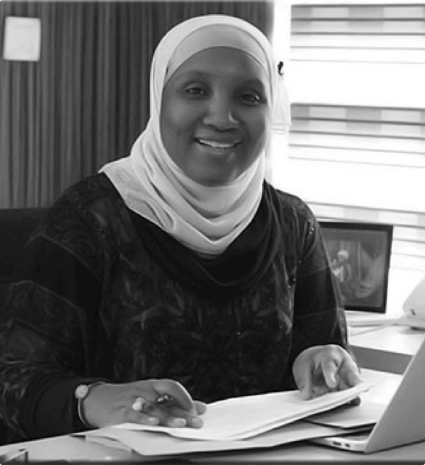

We are a 100% Nigerian group deploying best in class technology to meet the needs of our clients. Our solutions are at the cutting edge of contact center business process outsourcing and we have deep vertical expertise and unique understanding of industry specific needs. We put our clients at the heart of everything we do and deliver robust customer support solutions that span every segment of the customer value chain.
My favorite thing about working at Outsource Global, is the drive and passion of my fellow co-workers; they push me to become better and think more strategically. It doesn’t hurt that we have a lot of fun while we’re at it.
It has been such a pleasure and honor to work under the guidance of Ms. Amal Hassan. I truly appreciate the opportunity to work and interact with one of the finest contact center management team. It a dream come true of building, transforming, accelerate TOG’s business, focus on client interactions, leadership development, creation of new offerings, market penetration, driving strategic initiatives and establish a robust contact center entity serving the global market based out of Nigeria. Honored to be the COO of one of the finest high-tech contact center/ITES firms in Nigeria.
As a member of the Management team, I have found my experience at TOG to be rewarding on so many levels. Professionally, TOG has afforded me many challenges, throughout my three years , giving me the opportunity to work with and learn from so many talented members within the group
The company is growing rapidly and I get to be a part of that growth everyday as I lead the team in finding the most qualified workforce to meet our clients’ demand”lead the team in finding the most qualified workforce to meet our clients’ demand”
My favorite thing about working at Outsource Global, is the drive and passion of my fellow co-workers; they push me to become better and think more strategically. It doesn’t hurt that we have a lot of fun while we’re at it.